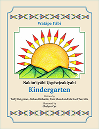

Media Collections Online
UI Design for AVALON at IU
UI Design for AVALON at IU
Avalon Media System is an open source system for managing and providing access to large collections of digital audio and video. As the Lead User-Experience Designer, I was created designs for the front-end user interface, as well as many of the back-end forms that are used to create and manage collections and their access.
UI Design proposal for Document Delivery Services. Document Delivery Services is a web-based library application where users could request interlibrary loan materials. Here is a preliminary design for the application homepage.
UI Design proposal for ScholarWorks, an open-source digital repository that allows scholars to share materials, while insuring that these resources are preserved and organized for the future. This proposed design highlights reasons for using the repository by providing user testimonials, examples of existing collections and some reasons to consider contributing documents to this scholarly archive.
|  | |||
 |
 |